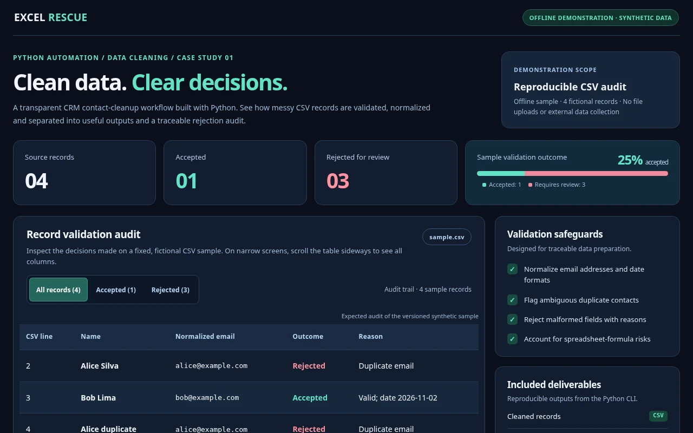

01 / Data cleanup
Excel Rescue
Clean a messy CSV and see exactly why each record was kept or rejected. Try the sample in one click or use a fictional CSV of your own.
Browser demo · local processing
Freelance portfolio
See how I build a service page, turn sales exports into a dashboard and make messy spreadsheets easier to trust.
Explore the demosThree interactive demos. No account required.

Clean a messy CSV and see exactly why each record was kept or rejected. Try the sample in one click or use a fictional CSV of your own.
Browser demo · local processing

A responsive service page for a fictional workspace studio, from the first impression to a contact form with clear feedback.
Prototype · form does not send

Filter a fictional sales dataset and see revenue, order counts and transaction details update together.
Browser demo · fixed sample data
Additional prototypes, automation tools and product experiments.
Export authorized JSON API data to clean CSV using controlled requests and safe defaults.
Try offline JSON-to-CSV previewRead case studyPrioritize fictional company leads with explicit opt-out and agency suppression, deduplication, and human-review-only output.
Try synthetic lead reviewRead safeguardsGenerate escaped HTML quotations from bounded fictional JSON inputs; no external signing or client data.
Try printable quotation previewRead generator guideCheck fictional CSV schemas, duplicates and anomalous values with explainable, traceable findings.
Try synthetic data auditRead audit rulesCompare two authorized local HTML snapshots; no live crawling, tracking or third-party requests.
Try local text comparisonRead comparison limitsPrivate procurement intelligence: sourcing concentration, stock scenarios, metadata triage and experimental delivery-delay estimates. Synthetic demo; commercial validation pending.
Explore synthetic decision reportRead product scope and market researchSimulated Word revisions, 12 mapped PandaDoc-style variables, safe local preview, testable API request shape and reproducible DOCX samples. No live PandaDoc integration claimed.
Try synthetic document demoRead limitations and run testsFictional two-hospital membership dashboard with simulated purchases, rewards ledger, redemptions, promotions and client-safe export. No live Stripe, login or customer data.
Try interactive veterinary dashboardScope, tests & architectureProcess
Define the outcome and how we’ll verify it.
Build the smallest version that solves the problem.
Test the main flow, edge cases and limits.
Deliver maintainable files and clear instructions.